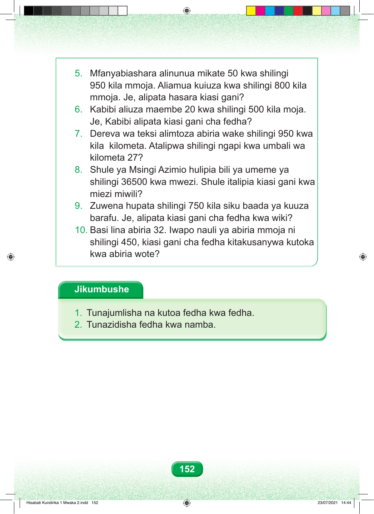

5. Mfanyabiashara alinunua mikate 50 kwa shilingi 950 kila mmoja. Aliamua kuiuza kwa shilingi 800 kila mmoja. Je, alipata hasara kiasi gani? 6. Kabibi aliuza maembe 20 kwa shilingi 500 kila moja. Je, Kabibi alipata kiasi gani cha fedha? 7. Dereva wa teksi alimtoza abiria wake shilingi 950 kwa kila kilometa. Atalipwa shilingi ngapi kwa umbali wa kilometa 27? 8. Shule ya Msingi Azimio hulipia bili ya umeme ya shilingi 36500 kwa mwezi. Shule italipia kiasi gani kwa miezi miwili? 9. Zuwena hupata shilingi 750 kila siku baada ya kuuza barafu. Je, alipata kiasi gani cha fedha kwa wiki? 10. Basi lina abiria 32. Iwapo nauli ya abiria mmoja ni shilingi 450, kiasi gani cha fedha kitakusanywa kutoka kwa abiria wote? Jikumbushe 1. Tunajumlisha na kutoa fedha kwa fedha. 2. Tunazidisha fedha kwa namba. 152 Hisabati Kundirika 1 Mwaka 2.indd 152 23/07/2021 14:44